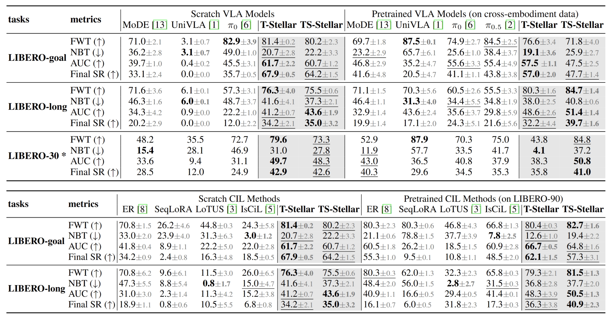

Overview
Continual robotic manipulation learning
The project studies how VLA agents acquire a sequence of tasks while preserving useful prior knowledge.
Vision-Language-Action
Continually evolving skill knowledge for robot manipulation, with task-centric and task-skill variants for stable lifelong VLA learning.
01
Why continual VLA needs reusable task-skill knowledge rather than growing task modules.
02
T-Stellar and TS-Stellar model task knowledge and task-skill structure for adaptive action routing.
03
Dual-arm real-robot tasks and LIBERO continual imitation learning evaluations.
Motivation
Vision-language-action models can inherit broad manipulation knowledge from pretraining, but efficient continual learning remains difficult. When new tasks arrive sequentially, the robot must adapt without overwriting old behaviours or adding a separate module for every task.
Stellar VLA reframes this as knowledge modelling. Instead of treating each task as isolated, the policy learns a compact knowledge space that captures relationships between tasks and skills. That knowledge then guides expert routing for action prediction.
Overview
The project studies how VLA agents acquire a sequence of tasks while preserving useful prior knowledge.

Real robot evidence
Real-world curves compare continual learning behaviour across seven dual-arm manipulation tasks.
Method

Architecture
Language and visual observations are encoded into task-centric representations, then aligned with a learned knowledge space for action prediction.

Knowledge space
The learned representation exposes task-level clusters and shared subskill relationships in long-horizon manipulation sequences.
T-Stellar
The flat variant learns task-relevant knowledge that helps specialize action prediction without expanding the policy for each new task.
TS-Stellar
The hierarchical variant models how tasks share reusable subskills, which is important for long-horizon manipulation.
Expert routing
Semantic embeddings and knowledge relationships guide which motion experts should be emphasized for a given task.
Real-World Experiments
Task 01
Grasping a stick with the dual-arm robot setup.
Task 02
Coordinated handover behaviour between robot arms.
Task 03
Generalization to deformable or flexible objects.
Task 04
Handover with object and scene variation.
Task 05
Pick-and-place with coordinated placement constraints.
Task 06
Dual-arm coordination with multiple objects.
Task 07
Contact-rich extraction after learning previous tasks.
Results

Real world
The real-robot evaluation compares continual manipulation performance across baseline policies and Stellar variants.

Simulation
Simulation studies cover goal, long-horizon, and multi-task LIBERO settings with limited replay.